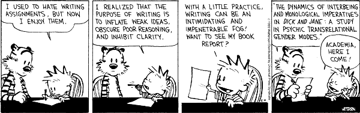

|
Exploration & Proof
Fall 2008 |
 |
The term paper is a project you will be working on throughout the semester. The topic is up to you but needs to be checked with me. Topics could be anything from the history of a mathematical concept to subjects that go beyond our text book. I expect that you will have found a topic by the end of September. A first, possibly incomplete, draft is due on October 20. You will correct each other's drafts; the corrections are due on November 3. The final version of your paper is due on December 8. You may hand in your paper early to be able to get feedback from me.
Here is a list of possible topics, but you should feel free to come up with your own ideas. The references are meant to provide starting points for your research.
- Russell's paradox: Expand on Project 4.5 in the book.
- Axiom systems different from those in our book (E. Landau, Foundations of Analysis, Chelsea, 2001).
- Irrationality of pi and e (T. Nagell, Introduction to number theory, American Mathematical Society, 2001, Section 13; J. Sondow, American Mathematical Monthly 113 (2006), pp. 637-641).
- Reasoning and fallacies in fundamental mathematics taught in elementary school (L. Ma, Knowing and teaching elementary mathematics).
- Ethnomathematics (start with any of the books by Claudia Zaslavsky).
- Mathematics literacy and civic equality (R. Moses, Radical Equations, Beacon Press, 2001).
- Mathematical awareness (start with any of the books by John Allen Paulos).
- Incorporating elementary number theory in the classroom (O. E. Nicodemi et al, Abstract Algebra, Prentice Hall, 2006, "To the teacher" notes in Chapter 1).
- How to define fractions in grade school (R. McCrory, Mathematicians and mathematics textbooks for prospective elementary teachers, Notices of the AMS, 53 (2006), pp. 20-29)
- Learning and teaching proofs (G. Harel & L. Sowder, Toward comprehensive perspectives on the learning and teaching of proof; G. Hanna, Proofs that prove and proofs that explain. In: G. Vergnaud, J. Rogalski, and M. Artigue (Eds.), Proceedings of the 13th Meeting of the International Group for the Psychology of Mathematics Education (pp. 45-51), PME, 1989)
- Conjectures (S. I. Brown & M. I. Walter, The art of problem posing (second edition), Lawrence Erlbaum, 1990)
- Peano's Axioms (H. C. Kennedy, Selected Works Of Giuseppe Peano, University of Toronto Press, 1973).
- Quaternions (F. Klein, Elementary mathematics from an advanced standpoint, The Macmillan Company, 1939).
- History of number systems (H.-D. Ebbinghaus et al, Numbers, Springer-Verlag, 1990; B. Mazur, Imagining numbers, Farrar, Straus, and Giroux, 2003).
- History of certain numbers, e.g., 0 (C. Seife, Zero, Viking, 2000), e (E. Maor, e: The story of a number, Princeton University Press, 1994).